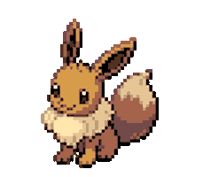
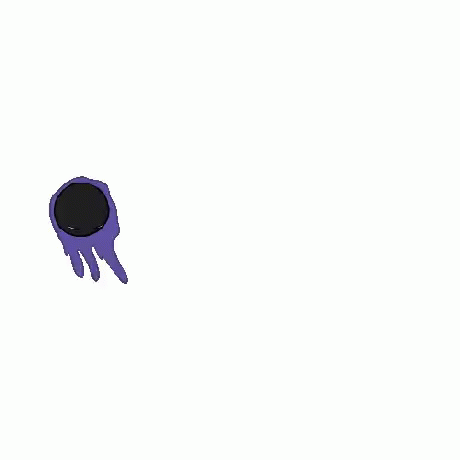

Za hranicami možností

Ponorte sa do tejto viac ako päťdesiat ročnej odysey zábavného priemyslu, ktorý sa stal obrovským kultúrnym odvetvím,
ktorého ekonomická váha dnes prevyšuje váhu kinematografie alebo hudby...
Voľnočasová aktivita, ktorú možno sledovať aj hrať, pre všetky vekové kategórie, na celom svete...
Krásna ako film, epická ako dobrodružná kniha, násilná ako vojna, jemná ako báseň. Romantická alebo živelná, mení sa podľa žánru...
Romantická alebo živelná, mení sa podľa žánru....
Je technologický a umelecký, populárny a spoločenský...
Má viac ako 3 miliardy fanúšikov po celom svete…
Videohry
Od Pongu po Elden Ring, cez Minecraft a GTA, videohry už desaťročia prinášajú mladým aj starým sny a ich koniec je v nedohľadne !
Videohry sa delia na rôzne žánre, pričom každý z nich ponúka jedinečný zážitok založený na rôznych herných svetoch.
Typy
Videohry sa delia na rôzne žánre, pričom každý z nich ponúka jedinečný zážitok založený na rôznych herných svetoch.
- Akčné
- Tieto hry sa zameriavajú na bojové mechanizmy a napínavý príbeh.
Devil May Cry, God of War, Dying Light, Legacy of Kain: Soul Reaver
- Dobrodružné
- Hráči skúmajú interaktívne svety, riešia hádanky a sledujú príbeh.
The Legend of Zelda, Uncharted, The Last of Us
- RPG - hra na hranie rolí
- Hráč preberá úlohu postavy, často vo fantasy svete, rozhoduje sa na základe dialógov a akcií, ktoré ovplyvňujú príbeh.
The Witcher 3, Final Fantasy, Skyrim, Fallout, Cyberpunk 2077
- Hry s otvoreným svetom
- Tieto svety dávajú hráčom úplnú/čiastočnú voľnosť na mape, takže môžete plniť misie a vedľajšie úlohy, vytvárať predmety
a dokonca vytvárať vzťahy a robiť vlastné rozhodnutia (oblečenie, zbrane, morálka atď.).
Red Dead Redemption 2, Ghost of Tsushima, Horizon Zero Dawn
- FPS - strieľačka z pohľadu prvej osoby
- Akcia sa odohráva z pohľadu postavy, často so strelnými zbraňami, veľmi obľúbená.
Call of Duty, Overwatch, Doom
- Simulácia
- ieto hry napodobňujú činnosti v reálnom živote, napríklad riadenie zdrojov, šoférovanie alebo simuláciu života.
The Sims, Farming Simulator
- Stratégia
- Hráči musia takticky plánovať a riadiť svoje akcie, aby dosiahli víťazstvo.
Civilization, StarCraft, Forge of Empires
- Puzzle
- Tieto hry sa zameriavajú na riešenie hádaniek, často s mechanizmami, ktoré si vyžadujú premýšľanie a logiku.
Tetris, Portal
- Survival (Survie)
- Cieľom je prežiť v nehostinnom prostredí prostredníctvom spravovania zdrojov a ochrany pred nebezpečenstvami.
Minecraft, The Forest, Ark
- MOBA – Multiplayer Online Battle Arena
- V tomto type hier proti sebe stoja tímy hráčov v arénach, kde je nevyhnutná stratégia a spolupráca.
League of Legends, Dota 2
- Battle Royale
- Stovky hráčov bojujú na veľkej mape, až pokým neprežije iba jeden, pričom bojové zóny sa časom zmenšujú, väčšinou ide o online hry.
Fortnite, Apex Legends
- Hack and Slash
- Tento žáner sa zameriava na rýchly a intenzívny boj proti mnohým nepriateľom pomocou zbraní alebo síl.
Diablo, Bayonetta
- Visual Novel
- Ide o príbehové hry, v ktorých hráč svojimi rozhodnutiami ovplyvňuje príbeh, často vo forme interaktívneho románu.
Doki Doki Literature Club!, Phoenix Wright: Ace Attorney
- Rytmické hry
- Tieto hry vyžadujú, aby hráči sledovali rytmus hudby a synchronizovane vykonávali akcie.
Guitar Hero, Beat Saber
- Športové simulácie
- Tieto hry reprodukujú skutočné športy a umožňujú hráčom hrať hry ako futbal, basketbal alebo preteky.
FIFA, NBA 2K
- Plošinovky
- Tieto hry sa zameriavajú na skákanie a skúmanie 2D alebo 3D prostredia, často s prekážkami, ktorým sa treba vyhnúť.
Super Mario, Rayman, Sonic, Celeste
- Hororové hry
- Tieto hry majú za cieľ vystrašiť hráča, často s napätou atmosférou a nadprirodzenými prvkami.
Resident Evil, Silent Hill, Until Dawn
Každý žáner môže mať podžánre a hybridy, čím je klasifikácia ešte pestrejšia !
